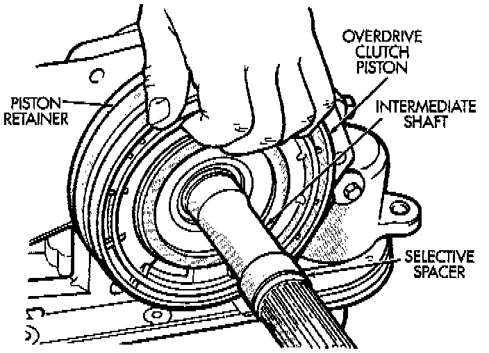
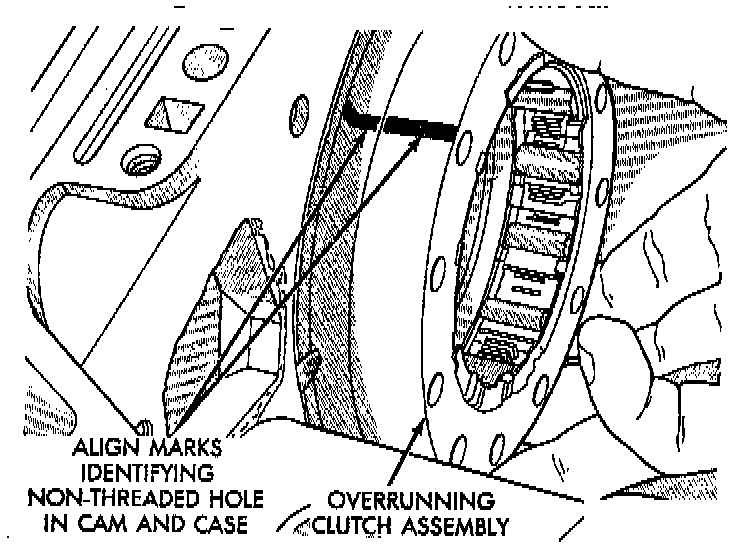
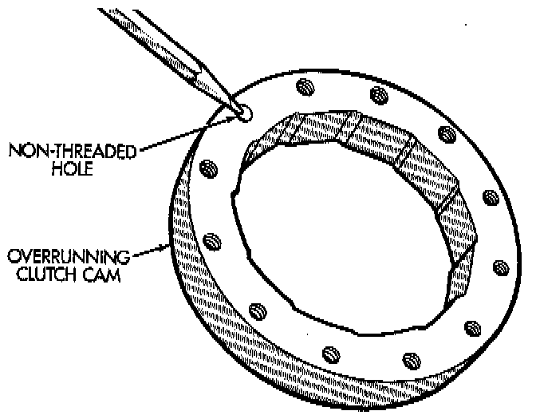
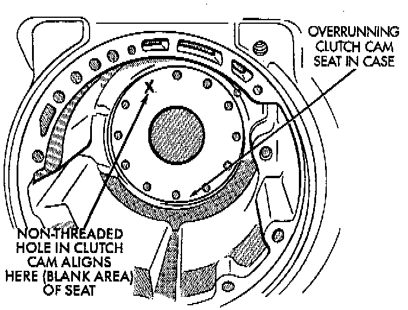
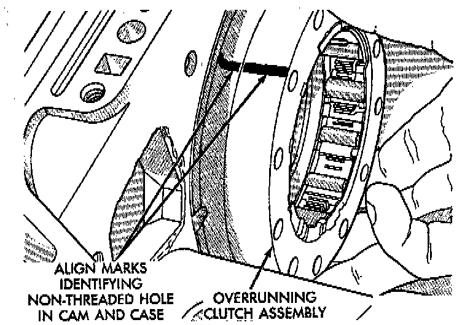
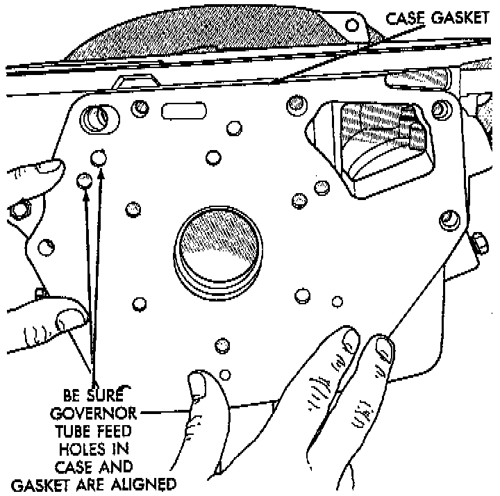
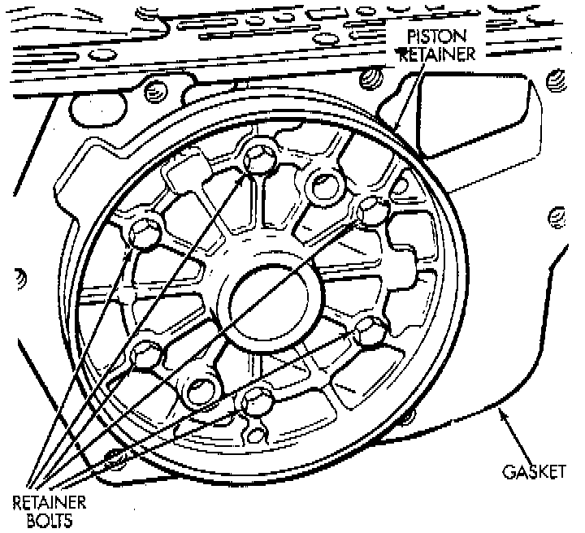

Overrunning Clutch Cam/Overdrive Piston Retainer
NOTE: To service the overrunning clutch cam and the overdrive piston retainer, the transmission gear-train and overdrive unit must be removed from the transmission.
DISASSEMBLY
1. Remove the overdrive piston.
2. Remove the overdrive piston retainer bolts.
3. Remove overdrive piston retainer.
4. Remove case gasket.

5. Mark the position of the overrunning clutch cam in the case.
6. Remove the overrunning clutch cam bolts.
7. Remove the overrunning clutch cam.


ASSEMBLY
1. Examine bolt holes in overrunning clutch cam. Note that one hole is not threaded. This hole must align with blank area in clutch cam bolt circle. Mark hole location on clutch cam and blank area in case with grease pencil, paint stripe, or scribe mark for assembly reference.
2. Mark location of non-threaded hole in clutch cam and blank area in bolt circle with grease pencil.

3. Align and install overrunning clutch and cam in case. Be sure cam is correctly installed. Bolt holes in cam are slightly countersunk on one side. Be sure this side of cam faces rearward (toward piston retainer).
4. Verify that non-threaded hole in clutch cam is properly aligned. Check alignment by threading a bolt into each bolt hole. Adjust clutch cam position if necessary.
5. Install and tighten overrunning clutch cam bolts to 17 Nm (13 ft. lbs.) torque. Note that clutch cam bolts are shorter than piston retainer bolts.

6. Install new gasket at rear of transmission case. Use petroleum jelly to hold gasket in place. Be sure to align governor feed holes in gasket with feed passages in case. Also install gasket before overdrive piston retainer. Center hole in gasket is smaller than retainer and cannot be installed over retainer.

7. Position overdrive piston retainer on transmission case and align bolt holes in retainer, gasket and case. Then install and tighten retainer bolts to 17 Nm (13 ft. lbs.) torque.
8. Install new seals on over drive piston.
9. Stand transmission case upright on bellhousing.
10. Position Guide Ring 8114-1, or equivalent on outer edge of overdrive piston retainer.
11. Position Seal Guide 8114-2, or equivalent on inner edge of overdrive piston retainer.
12. Install overdrive piston in overdrive piston retainer by: aligning locating lugs on overdrive piston to the two mating holes in retainer.
a. Aligning locating lugs on overdrive piston to the two mating holes in retainer.
b. Lubricate overdrive piston seals with MOPAR Door Ease, or equivalent.
c. Install piston over Seal Guide 8114-2 and inside Guide Ring 8114-1, or equivalents.
d. Push overdrive piston into position in retainer.
e. Verify that the locating lugs entered the lug bores in the retainer.
NOTE: Install the remaining transmission components and overdrive unit.